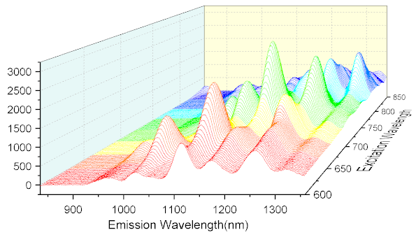
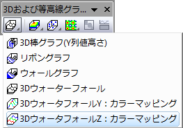

3Dウォータフォール Z：カラーマッピング
- 
必要なデータ
最低1つのY列あるいは、その部分領域を選択します。 理想的には、少なくとも2つのY列、または少なくとも2つのY列の範囲を選択します。関連付けられたX列がある場合はそれを使用し、そうでない場合は、Y列のサンプリング間隔または行番号が使用されます。
グラフ作成
データを選択します。
メインメニューから、 を選択します。
または、
「3Dおよび等高線グラフ」ツールバーのZカラーマッピング3Dウォーターフォールボタンをクリックします。
- 
テンプレート
glWater3D.OTP (Originのプログラムフォルダにインストールされています。)
ノート
3Dウォータフォール：ZカラーマッピングはOpenGLをベースとしたグラフの1つです。
- 各列のY値は、塗りつぶしの色が白いXY面を定義します。
- カラーマッピングは、折れ線のZ方向に適用されます。
- 通常、すべてのXY面は、列ラベル行に入力されている値によってZ方向に配置されます。列ラベル行に数値が含まれている場合、これらは自動的に検出され、Z軸のラベル付けに使用されます。数値行がない場合は、列ヘッダを含む他の列メタデータを使用してZ軸にラベルを付けることができます。最終的な制御は、作図の詳細のその他の3Dオプション タブ（レイヤレベル）にあるZ値ソースドロップダウンを介して行います。
- 作図の詳細のラベル タブにあるコントロールを使用して、3D ウォーターフォールのデータラベル付けを有効にできます。